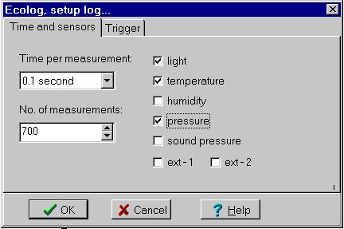

Menu in Datalase:
Graphical measurement on 1 input
Measure on more inputs
Setup log...
Read log
Ecolog has 5 built-in sensors for measuring temperature, light, pressure, relative humidity and sound pressure. It is also possible to connect two external sensors (0-5V).
The resolution is 8 bits and the memory is 8 kb.
You can measure online and off line. When measuring off line, the ecolog is first setup from the pc. You can set the log to start at a given time or when run is pressed.
When the log is read in Datalyse, the measurings are written to the table and the graphs are drawn. At the same time, the contents are copied to the clipboard to be pasted into e.g. a spreadsheet.
Setup log:

The number of measurings depend on the number of probes selected. From 8KB = 8192 measuring at one probe to 8192/7 = 1170 measurings at 7 probes.
The times go from 0,1 s to 1 hour.
On the tab sheet, Trigger, you can set the log to start at a given time: hh:mm:ss YY-MM-DD.
Distributor in Denmark: A/S S. Frederiksen.
Fourier Systems, Israel
web: www.fourier-sys.com